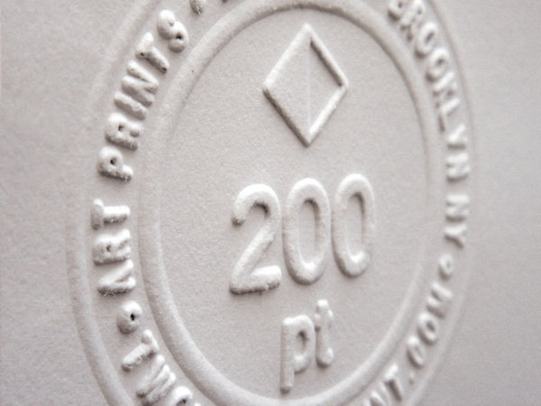

200pt Brand Development
Barnickel Design created the 200pt brand to showcase their art print and graphic tees.
The bisected diamond logo is a tribute to Sébastien Truchet, the French mathematician who created the standard for measuring type that our modern point system comes from. He also created a tiling system where an almost infinite number of patterns can be created by arranging his tiles in different ways.. we took Truchet’s tile and rotated it 45º to get our logo. The hand stamped, inexact application of the logo aims to further emphasize our interest in the reconciliation of opposites.
Via Behance